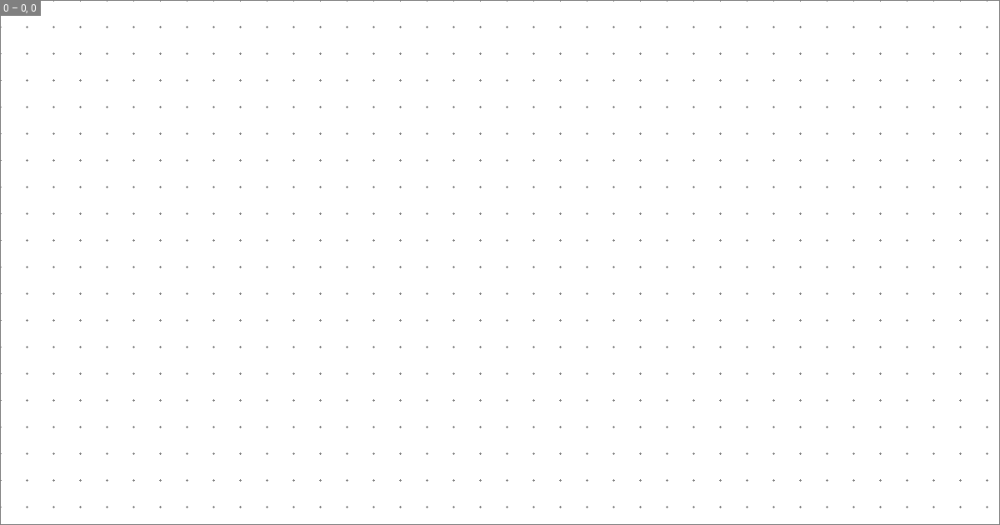
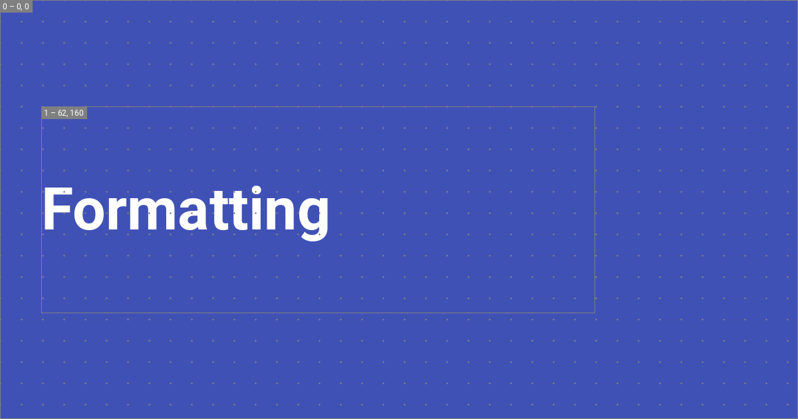

Setting up social cards
Material for MkDocs can automatically create beautiful social cards for your documentation, which appear as link previews on social media platforms. You can select from several pre-designed layouts or create custom layouts to match your unique style and branding.
:fontawesome-brands-youtube:{ style="color: #EE0F0F" } How to build custom social cards by @james-willett – :octicons-clock-24: 24m – Learn how to create entirely custom social cards perfectly matching your branding for each page automatically!
Configuration
Built-in social plugin
:octicons-tag-24: 8.5.0 · :octicons-cpu-24: Plugin · :octicons-beaker-24: Experimental
The built-in social plugin automatically generate a custom preview image for
each page. Install all dependencies for image processing1 and add the
following lines to mkdocs.yml:
Note that Insiders contains a ground up rewrite of the social plugin that generates images much more efficiently in parallel and allows to build entirely custom layouts.
The following configuration options are available:
enabled{ #+social.enabled }
: :octicons-milestone-24: Default: true – This option specifies whether
the plugin is enabled when building your project. If you want to speed up
local builds, you can use an environment variable:
``` yaml
plugins:
- social:
enabled: !ENV [CI, false]
```
concurrency{ #+social.concurrency }
: :octicons-tag-24: insiders-4.33.0 · :octicons-milestone-24: Default: number of CPUs – How many CPUs the plugin is allowed to use when generating social cards. With more CPUs, the plugin can do more work in the same time, thus complete generation faster. Concurrent processing can be disabled with:
``` yaml
plugins:
- social:
concurrency: 1
```
Social cards
The following configuration options are available for card generation:
cards{ #+social.cards }
: :octicons-milestone-24: Default: true – This option specifies whether
to generate social card images. If you want to switch the plugin off, e.g.
for local builds, you can use an environment variable:
``` yaml
plugins:
- social:
cards: !ENV [CI, false]
```
cards_dir{ #+social.cards_dir }
: :octicons-milestone-24: Default: assets/images/social – This option
specifies where the generated social cards will be stored. While it's
usually not necessary to change this option, change it with:
``` yaml
plugins:
- social:
cards_dir: assets/images/social
```
cards_layout_dir{ #+social.cards_layout_dir }
: :octicons-tag-24: insiders-4.33.0 · :octicons-milestone-24: Default: none – This option specifies where the social plugin should try to resolve custom layouts from, taking precedence over the included layouts:
``` yaml
plugins:
- social:
cards_layout_dir: layouts
```
cards_layout{ #+social.cards_layout } :material-alert-decagram:{ .mdx-pulse title="Added on May 8, 2023" }
: :octicons-tag-24: insiders-4.33.0 · :octicons-milestone-24:
Default: default – Layout specification the social card should use. The
plugin includes the following layouts which make use of the color palette
and font:
=== "`default`"
``` yaml
plugins:
- social:
cards_layout: default
```
This layout uses the configured [primary color] as a background:
[![Layout default]][Layout default]
=== "`default/variant`"
``` yaml
plugins:
- social:
cards_layout: default/variant
```
This layout includes the [page icon] as a watermark, if defined:
[![Layout default variant]][Layout default variant]
=== "`default/accent`"
``` yaml
plugins:
- social:
cards_layout: default/accent
```
This layout uses the configured [accent color] as a background:
[![Layout default accent]][Layout default accent]
=== "`default/invert`"
``` yaml
plugins:
- social:
cards_layout: default/invert
```
This layout inverts the background and foreground colors:
[![Layout default invert]][Layout default invert]
=== "`default/only/image`"
``` yaml
plugins:
- social:
cards_layout: default/only/image
cards_layout_options:
background_image: layouts/background.png
```
This layout will only show the given background image and scale to fit:
[![Layer background image]][Layer background image]
All [`default`][default layouts] layouts make use of the following
[template variables]:
- :material-page-layout-header: – `config.site_name`
- :material-page-layout-body: – `page.meta.title` or `page.title`
- :material-page-layout-footer: – `page.meta.description` or `config.site_description`
- :material-page-layout-sidebar-right: – `theme.logo` or `theme.icon.logo`
cards_layout_options{ #+social.cards_layout_options }
: :octicons-tag-24: 9.1.10 · :octicons-milestone-24: Default: none – This option allows to set parameters as provided by the layout specification. For custom layouts, this key can be used to provide layout-specific options, making layouts entirely configurable.
---
All [`default`][default layouts] layouts expose the following parameters:
[`background_color`](#+social.cards_layout_options.background_color){ #+social.cards_layout_options.background_color }
: Set a background color, which can be a [CSS color keyword], or a 3, 4, 6
or 8 letter HEX color code. Alpha channels are supported as well:
``` yaml
plugins:
- social:
cards_layout_options:
background_color: "#0FF1CE"
```
[`background_image`](#+social.cards_layout_options.background_image){ #+social.cards_layout_options.background_image }
: [:octicons-tag-24: insiders-4.33.0][Insiders] – Set a background image.
If a `background_color` is set, like for the
[`default`][default layouts] layouts, the image is tinted (overlayed)
with the color. Thus, the background color must be (partially)
transparent for the image to become visible:
``` yaml
plugins:
- social:
cards_layout_options:
background_color: "#00000000"
background_image: layouts/background.png
```
The path of the image must be defined relative to the project root.
[`color`](#+social.cards_layout_options.color){ #+social.cards_layout_options.color }
: Set a foreground color, which can be a [CSS color keyword], or a 3, 4, 6
or 8 letter HEX color code. The color is primarily used to tint text and
icons:
``` yaml
plugins:
- social:
cards_layout_options:
color: "#0FF1CE"
```
[`font_family`](#+social.cards_layout_options.font_family){ #+social.cards_layout_options.font_family }
: Set a font family. This overrides the [font] that is set as part of the
theme configuration. The [built-in social plugin] will automatically
download the font from [Google Fonts]:
``` yaml
plugins:
- social:
cards_layout_options:
font_family: Ubuntu
```
cards_include{ #+privacy.cards_include }
: :octicons-tag-24: insiders-4.35.0 · :octicons-milestone-24: Default: none – This option allows to only generate social cards for certain subsections of your documentation, e.g. to generate different cards for different subfolders with multiple instances of the plugin:
``` yaml
plugins:
- social:
cards_include:
- blog/*
```
cards_exclude{ #+privacy.cards_exclude }
: :octicons-milestone-24: Default: none – This option allows to exclude certain subsections of your documentation from generating social cards:
``` yaml
plugins:
- social:
cards_exclude:
- changelog/*.md
```
Debugging
The following configuration options are available for debugging:
debug{ #+social.debug }
: :octicons-tag-24: insiders-4.33.0 · :octicons-milestone-24:
Default: false – This option enables a special debug mode, which renders
each layer with an outline and its x and y offset in order to understand
how the layout is composed, and optionally renders a grid for easier
alignment:
``` yaml
plugins:
- social:
debug: true
```
=== "With debug mode"
[![Debug mode enabled]][Debug mode enabled]
=== "Without"
[![Debug mode disabled]][Debug mode disabled]
[Debug mode enabled]: ../assets/screenshots/social-cards-debug.png
[Debug mode disabled]: ../assets/screenshots/social-cards-variant.png
debug_on_build{ #+social.debug_on_build }
: :octicons-tag-24: insiders-4.34.1 · :octicons-milestone-24:
Default: false – Whether debug mode should be automatically disabled
when building your site with mkdocs build. It can be changed with:
``` yaml
plugins:
- social:
debug_on_build: true
```
This setting is just intended to be a safety net, so that when building
your site social cards definitely won't contain the dot grid or layer
outlines by accident.
debug_grid{ #+social.debug_grid }
: :octicons-tag-24: insiders-4.33.0 · :octicons-milestone-24:
Default: true – This option enables the rendering of a dot grid when
debug is enabled (see screenshot above). The grid can be switched
off with:
``` yaml
plugins:
- social:
debug_grid: false
```
debug_grid_step{ #+social.debug_grid_step }
: :octicons-tag-24: insiders-4.33.0 · :octicons-milestone-24:
Default: 32 – This option specifies the step size of the grid in pixels,
if enabled, which can be used to align elements. It can be changed with:
``` yaml
plugins:
- social:
debug_grid_step: 64
```
debug_color{ #+social.debug_color }
: :octicons-tag-24: insiders-4.33.0 · :octicons-milestone-24:
Default: grey – This option sets the color of the layer outlines and
the grid which are rendered when debug is enabled. It can be
changed with:
``` yaml
plugins:
- social:
debug_color: yellow
```
Caching
The built-in social plugin implements an intelligent caching mechanism, ensuring that social cards are only re-generated when they're not contained in the cache or their contents change. If any of the variables used in a layout changes, the plugin will detect it and re-generate the card.
The following configuration options are available for caching:
cache{ #+social.cache }
: :octicons-tag-24: insiders-4.33.0 · :octicons-milestone-24:
Default: true – Whether the plugin queries its cache for an existing
artifact before starting a generation job. It's normally not necessary to
change this setting, except for when debugging the plugin itself. Caching
can be disabled with:
``` yaml
plugins:
- social:
cache: false
```
cache_dir{ #+social.cache_dir }
: :octicons-milestone-24: Default: .cache/plugins/social – This option
specifies the file system location of the plugin's cache. It's normally not
necessary to change this setting, except for when debugging the plugin
itself. The cache directory can be changed with:
``` yaml
plugins:
- social:
cache_dir: .cache/plugins/social
```
By default, all built-in plugins that implement caching will create a
`.cache` directory in the same folder your `mkdocs.yml` resides, and create
subfolders to not interfere with each other. If you use multiple instances
of this plugin, it could be necessary to change this setting.
Usage
If you want to adjust the title or set a custom description for the social card,
you can set the front matter title and description properties, which take
precedence over the default values.
Choosing a font
Some fonts do not contain CJK characters, like for example the
default font, Roboto. In case your site_name, site_description, or
page title contain CJK characters, choose another font from Google Fonts which
comes with CJK characters, e.g. one from the Noto Sans font family:
=== "Chinese (Simplified)"
``` yaml
plugins:
- social:
cards_layout_options:
font_family: Noto Sans SC
```
=== "Chinese (Traditional)"
``` yaml
plugins:
- social:
cards_layout_options:
font_family: Noto Sans TC
```
=== "Japanese"
``` yaml
plugins:
- social:
cards_layout_options:
font_family: Noto Sans JP
```
=== "Korean"
``` yaml
plugins:
- social:
cards_layout_options:
font_family: Noto Sans KR
```
Changing the layout
:octicons-tag-24: insiders-4.37.0 · :octicons-beaker-24: Experimental
If you want to use a different layout for a single page (e.g. your landing
page), you can use the social front matter property together with the
cards_layout key, exactly as in mkdocs.yml:
You can apply those changes for entire subtrees of your documentation, e.g., to generate different social cards for your blog and API reference, by using the built-in meta plugin.
Parametrizing the layout
:octicons-tag-24: insiders-4.37.0 · :octicons-beaker-24: Experimental
Besides changing the entire layout, you can override all options that a layout
exposes. This means you can parametrize social cards with custom front matter
properties, such as tags, date, author or anything you can think of.
Simply define cards_layout_options:
---
social:
cards_layout_options:
background_color: blue # Change background color
background_image: null # Remove background image
---
# Headline
...
You can apply those changes for entire subtrees of your documentation, e.g., to generate different social cards for your blog and API reference, by using the built-in meta plugin.
Disabling social cards
:octicons-tag-24: insiders-4.37.0 · :octicons-beaker-24: Experimental
If you wish to disable social cards for a page, simply add the following to the front matter of the Markdown document:
Customization
:octicons-heart-fill-24:{ .mdx-heart } Sponsors only{ .mdx-insiders } · :octicons-tag-24: insiders-4.33.0 · :octicons-beaker-24: Experimental
Insiders ships a ground up rewrite of the built-in social plugin and introduces a brand new layout system based on a combination of YAML and Jinja templates – the same engine Material for MkDocs uses for HTML templating – allowing for the creation of complex custom layouts:


Social cards are composed of layers, analogous to how they are represented in graphic design software such as Adobe Photoshop. As many layers are common across the cards generated for each page (e.g., backgrounds or logos), the built-in social plugin can automatically deduplicate layers and render them just once, substantially accelerating card generation. The generated cards are cached to ensure they are only regenerated when their contents change.
Layouts are written in YAML syntax. Before starting to create a custom layout,
it is a good idea to study the pre-designed layouts (link to Insiders
repository), in order to get a better understanding of how they work. Then,
create a new layout and reference it in mkdocs.yml:
=== ":octicons-file-code-16: layouts/custom.yml"
``` yaml
size: { width: 1200, height: 630 }
layers: []
```
=== ":octicons-file-code-16: mkdocs.yml"
``` yaml
plugins:
- social:
cards_layout_dir: layouts
cards_layout: custom
debug: true
```
Note that the .yml file extension should be omitted. Next, run mkdocs serve,
and see how the .cache directory is populated with the generated cards. Open
any card in your editor, so you can see your changes immediately. Since we
haven't defined any layers, the cards are transparent.
The following sections explain how to create custom layouts.
Size and offset
Each layer has an associated size and offset, which is defined in pixels. The
size is defined by a width and height property, and the offset by x
and y properties:
size: { width: 1200, height: 630 }
layers:
- size: { width: 1200, height: 630 }
offset: { x: 0, y: 0 }
If the size is omitted, it defaults to the size of the layout. If the offset
is omitted, it defaults to the top left corner, which is the defaut origin.
Saving the layout and reloading renders:

The layer outline and grid are visible because we enabled debug
mode in mkdocs.yml. The top left shows the layer index and offset, which is
useful for alignment and composition.
Origin
:octicons-tag-24: insiders-4.35.0 · :octicons-beaker-24: Experimental
The origin for the x and y values can be changed, so that the layer is
aligned to one of the edges or corners of the layout, e.g., to the bottom right
corner of the layout:
size: { width: 1200, height: 630 }
layers:
- size: { width: 1200, height: 630 }
offset: { x: 0, y: 0 }
origin: end bottom
The following table shows the supported values:
Backgrounds
Each layer can be assigned a background color and image. If both are given, the color is rendered on top of the image, allowing for semi-transparent, tinted backgrounds:
=== "Background color"
``` yaml
size: { width: 1200, height: 630 }
layers:
- background:
color: "#4051b5"
```
![Layer background color]
=== "Background image"
``` yaml
size: { width: 1200, height: 630 }
layers:
- background:
image: layouts/background.png
```
![Layer background image]
=== "Background image, tinted"
``` yaml
size: { width: 1200, height: 630 }
layers:
- background:
image: layouts/background.png
color: "#4051b5ee" # (1)!
```
1. The color value can be set to a [CSS color keyword], or a 3, 4, 6 or 8
letter HEX color code, allowing for semi-transparent layers.
![Layer background]
Background images are automatically scaled to fit the layer while preserving
aspect-ratio. Notice how we omitted size and offset, because we want to
fill the entire area of the social card.
Typography
Now, we can add dynamic typography that is sourced from Markdown files - this is the actual raison d'être of the built-in social plugin. Jinja templates are used to render a text string that is then added to the image:
size: { width: 1200, height: 630 }
layers:
- size: { width: 832, height: 310 }
offset: { x: 62, y: 160 }
typography:
content: "{{ page.title }}" # (1)!
align: start
color: white
line:
amount: 3
height: 1.25
font:
family: Roboto
style: Bold
-
The following variables can be used in Jinja templates:
The author is free in defining
layout.*options, which can be used to pass arbitrary data to the layout frommkdocs.yml.
This renders a text layer with the title of the page with a line height of 1.25, and a maximum number of 3 lines. The plugin automatically computes the font size from the line height, the number of lines, and font metrics like ascender and descender.2 This renders:

Overflow
If the text overflows the layer, there are two possible behaviors: either the text is automatically truncated and shortened with an ellipsis, or the text is automatically scaled down to fit the layer:
=== ":octicons-ellipsis-16: Ellipsis"
![Layer typography ellipsis]
=== ":material-arrow-collapse: Shrink"
![Layer typography shrink]
While truncating with an ellipsis is the default, auto-shrinking can be enabled
by setting overflow to shrink:
size: { width: 1200, height: 630 }
layers:
- size: { width: 832, height: 310 }
offset: { x: 62, y: 160 }
typography:
content: "{{ page.title }}"
overflow: shrink
align: start
color: white
line:
amount: 3
height: 1.25
font:
family: Roboto
style: Bold
Alignment
Text can be aligned to all corners and edges of the layer. For example, if we
want to align the text to the middle of the layer, we can set align to start center, which will render as:

The following table shows the supported values:
Font
The built-in social plugin integrates with Google Fonts and will
automatically download the font files for you. The font property accepts a
family and style property, where the family must be set to the name of the
font, and the style to one of the supported font styles. For example, setting
family to Roboto will automatically download the following files:
.cache/plugins/social/fonts
└─ Roboto/
├─ Black.ttf
├─ Black Italic.ttf
├─ Bold.ttf
├─ Bold Italic.ttf
├─ Italic.ttf
├─ Light.ttf
├─ Light Italic.ttf
├─ Medium.ttf
├─ Medium Italic.ttf
├─ Regular.ttf
├─ Thin.ttf
└─ Thin Italic.ttf
In that case, the author can use Bold or Medium Italic as the style. If
the font style specified in the layer is not part of the font family, the
font always falls back to Regular and prints a warning in debug
mode, as Regular is included with all font families.
Icons
Authors can leverage the full range of icons that are shipped with Material for
MkDocs, or even provide custom icons by using theme extension and going through
the process described in the guide on additional icons. Icons can even be
tinted by using the color property:
size: { width: 1200, height: 630 }
layers:
- background:
color: "#4051b5"
- size: { width: 144, height: 144 }
offset: { x: 992, y: 64 }
icon:
value: material/cat
color: white
This will render the icon in the top right corner of the social card:

The possibilities are endless. For example, icons can be used to draw shapes like circles:
size: { width: 1200, height: 630 }
layers:
- background:
color: "#4051b5"
- size: { width: 2400, height: 2400 }
offset: { x: -1024, y: 64 }
icon:
value: material/circle
color: "#5c6bc0"
- size: { width: 1800, height: 1800 }
offset: { x: 512, y: -1024 }
icon:
value: material/circle
color: "#3949ab"
This will add two circles to the background:

Tags
The new built-in social plugin gives full flexibility of the meta tags that are added to your site, which are necessary to instruct services like Twitter or Discord how to display your social card. All default layouts use the following set of tags, which you can copy to your layout and adapt:
definitions:
- &page_title_with_site_name >-
{%- if not page.is_homepage -%}
{{ page.meta.get("title", page.title) }} - {{ config.site_name }}
{%- else -%}
{{ page.meta.get("title", page.title) }}
{%- endif -%}
- &page_description >-
{{ page.meta.get("description", config.site_description) or "" }}
tags:
og:type: website
og:title: *page_title_with_site_name
og:description: *page_description
og:image: "{{ image.url }}"
og:image:type: "{{ image.type }}"
og:image:width: "{{ image.width }}"
og:image:height: "{{ image.height }}"
og:url: "{{ page.canonical_url }}"
twitter:card: summary_large_image
twitter.title: *page_title_with_site_name
twitter:description: *page_description
twitter:image: "{{ image.url }}"
Note that this examples makes use of YAML anchors to minify repetition. The
definitions property is solely intended for the definition on aliases that
can then be referenced with anchors.
Are you missing something? Please open a discussion and let us know!
-
The awesome thing about social cards is that they are generated during build time and directly distributed with your documentation, no external services involved. While it would technically be simpler to generate social cards using a web browser and an automation framework like Puppeteer, it would add further liabilities to the toolchain, with the potential to make build pipelines more complex and resource intense.
For this reason, Material for MkDocs again follows its core principle of making it as simple and powerful as possible, providing an easy-to-use framework for building custom layouts using Python image processing libraries. ↩
-
If the plugin would require the author to specify the font size and line height manually, it would be impossible to guarantee that the text fits into the layer. For this reason we implemented a declarative approach, where the author specifies the desired line height and number of lines, and the plugin computes the font size automatically. ↩